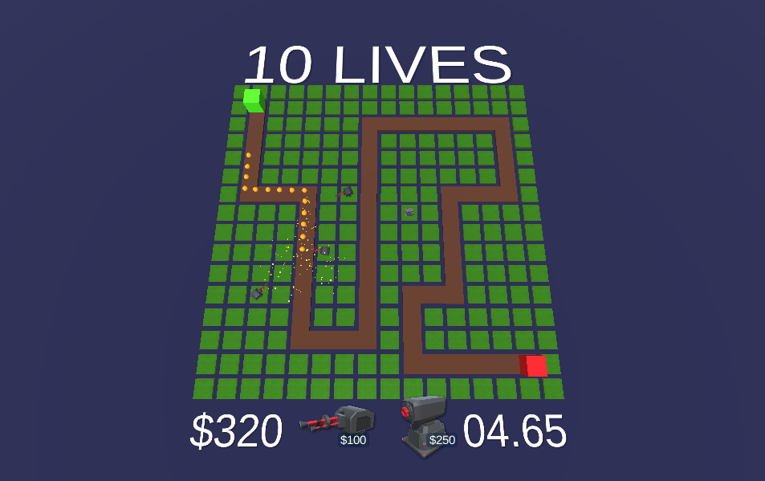

Yet Another Tower Defence Game, or YATDG, is a single player, wave-based tower defence game
where the player has to stop the mysterious orange orbs from making it to the end of the level!
The player can purchase turrets with money obtained from killing the orbs, but it's all not that easy
as YOU, the player, have only 10 LIVES ... IT'S ALL UP TO YOU!
